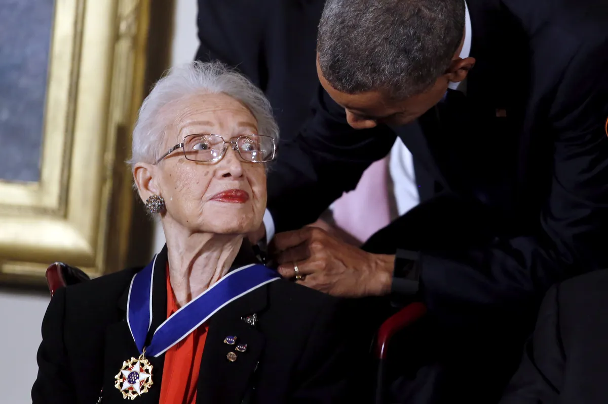
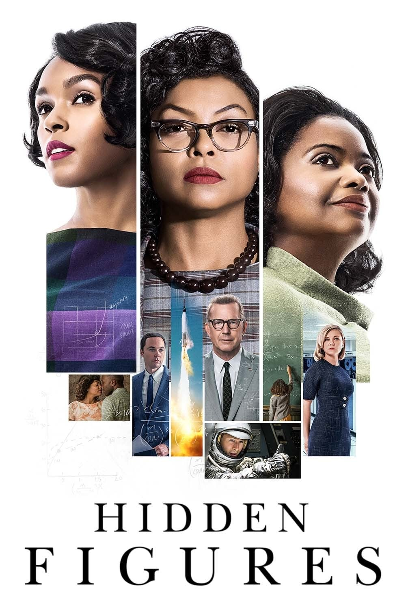

Neil Armstrong, John Glenn ou Buzz Aldrin são apenas alguns dos grandes nomes que ressoam quando falamos da era de ouro da corrida espacial. Mas por trás de cada uma das missões da NASA em que esses personagens notáveis participaram, existem centenas de mentes brilhantes que tornaram esses projetos possíveis e sobre as quais você quase não ouve falar.
As mulheres são as primeiras ausentes da lista de reconhecimentos e, dentro do gênero, um grupo em especial: matemáticas e engenheiras afro-americanas que ajudaram a agência espacial americana a realizar projetos na escala das missões Apollo ou Mercury.
Sua contribuição foi ignorada até que Margot Lee Shetterly, escritora e filha de um pesquisador afro-americano do NASA Langley Research Center (LaRC) na Virgínia, publicou um livro intitulado "Hidden Figures" (traduzido para o portugués como "Estrelas Além do Tempo") que detalha o trabalho dessas mulheres cujos nomes não aparecem em revistas acadêmicas ou registros históricos.
As afro-americanas chegaram na década de os anos 40 para trabalhar em Langley - o centro mais antigo da NASA - para fazer cálculos matemáticos fundamentais para o desenvolvimento de projetos aeronáuticos e de aviação.
Eles conseguiram entrar lá depois que o então presidente dos Estados Unidos, Franklin D. Roosevelt, promulgou a Ordem Executiva 8802 que impedia o exercício da discriminação racial na contratação de serviços federais e relacionados à guerra.
Essas calculadoras humanas se encarregavam das equações e descreviam cada uma das funções de uma aeronave, mas não participavam de todo o projeto.
Anos antes, mulheres brancas já haviam começado a fazer esse trabalho. Devido às normas e costumes da época, a maioria delas passou apenas alguns anos ali, até chegar a vez de se tornarem esposas e mães. Mas outros, graças ao seu desempenho brilhante, conseguiram deixar o papel de computador vivo para trabalhar em projetos específicos.
O nome pelo qual esse grupo de mulheres afro-americanas era conhecido era "Computadores da ala oeste", onde eram agrupadas as mulheres de cor que realizavam esse trabalho.
"No escritório, as mulheres se sentiam iguais", diz ela em seu livro Shetterly, "mas no refeitório e banheiros projetados para jovens de cor, os cartazes eram um lembrete de que mesmo dentro da meritocracia do serviço público nos EUA (... ) alguns eram mais iguais que outros".
Não se sabe exatamente quantos computadores humanos trabalharam na NACA (a agência que mais tarde se tornou a NASA), mas Shetterly estima que milhares contribuíram com seus conhecimentos entre 1935 e 1970.
Quatro em particular chamaram sua atenção: Katherine Johnson, que calculou as trajetórias das missões Apollo e Mercury, Dorothy Vaughan, a primeira supervisora afro-americana da NASA, Mary Jackson, que se tornou a primeira engenheira afro-americana da NASA em 1958, e Christine Darden, que trabalhou no desenvolvimento do vôo supersônico.
Aos 98 anos, Johnson lembra que seu fascínio pelos números começou cedo. "Desde criança ela começou a contar: estrelas, pratos, escadas... Qualquer coisa", comenta Shetterly em seu livro. Katherine Johnson foi uma matemática e cientista negra norte-americana muito importante. Trabalhando para a NASA, ela foi essencial para a corrida espacial que levou o ser humano à Lua. Johnson entrou para a NACA e foi trabalhar na equipe chefiada por outra mulher negra de prestígio, Dorothy Vaughan. Ela trabalhou por quatro anos como "computadora" analisando voos de aviões e fazendo cálculos matemáticos de extrema precisão. Em 1958 a instituição passa a se chamar National Aeronautics and Space Act (NASA) e Katherine começa a produzir e publicar artigos que embasaram a exploração espacial. Um de seus grandes feitos foi atuando na missão Apollo 11, que levou o ser humano à Lua. Foi ela a responsável por diversos cálculos que determinaram a trajetória da nave. Mas ela contribuiu em vários outros projetos da empresa, como Projeto Mercury. E tal era sua habilidade que continuou a fazer cálculos mesmo quando já existiam as máquinas que o faziam. Katherine Johnson trabalhou na NASA por 33 anos, até se aposentar em 1986. A matemática deixou um importante legado para a ciência, tendo publicado mais de 20 artigos científicos e sendo pioneira na exploração espacial. Em 2015, o presidente dos EUA, Barack Obama, concedeu-lhe a Medalha da Liberdade em reconhecimento aos seus serviços, tornando-a a única mulher da NASA a receber esta honra.
Dorothy Vaughan (20 de setembro de 1910 - 10 de novembro de 2008) foi uma matemática e computador afro-americana. Em seu tempo trabalhando para a NASA, ela se tornou a primeira mulher afro-americana a ocupar um cargo de supervisão e ajudou a transição da instituição para a programação de computadores .
Dorothy Vaughan ensinou no ensino médio por 14 anos durante a era da educação racialmente segregada. Em 1943, durante a Segunda Guerra Mundial, ela conseguiu um emprego no National Advisory Committee for Aeronautics (NACA, o antecessor da NASA) como computador. Vaughan foi designado para o grupo de Computação da Área Oeste no Langley Research Center em Hampton, Virgínia. Apesar de mulheres de cor serem recrutadas ativamente, elas ainda eram segregadas em grupos separados de suas contrapartes brancas.
O grupo de computação consistia em matemáticas experientes que lidavam com cálculos matemáticos complexos, quase todos feitos à mão. Durante a guerra, seu trabalho estava ligado ao esforço de guerra, pois o governo acreditava firmemente que a guerra seria vencida com a força das forças aéreas. O escopo da atividade na NACA expandiu-se consideravelmente após o fim da Segunda Guerra Mundial e o programa espacial começou a sério. Na maior parte, seu trabalho envolvia ler dados, analisá-los e plotá-los para uso dos cientistas e engenheiros.
Em 1949, Dorothy Vaughan foi designada para supervisionar os Computadores da Área Oeste, mas não em um papel oficial de supervisão. Em vez disso, ela recebeu o papel de chefe interina do grupo (depois que sua supervisora anterior, uma mulher branca, morreu). Isso significava que o trabalho não veio com o título esperado e o aumento salarial. Levou vários anos e defendendo a si mesma antes que ela finalmente recebesse o papel de supervisora em uma capacidade oficial e os benefícios que vieram com isso.
Vaughan não apenas defendeu a si mesma, mas também trabalhou duro para defender mais oportunidades para as mulheres. Sua intenção não era apenas ajudar seus colegas da West Computing, mas mulheres em toda a organização, incluindo mulheres brancas. Eventualmente, sua experiência passou a ser altamente valorizada pelos engenheiros da NASA, que confiaram fortemente em suas recomendações para combinar projetos com os computadores cujas habilidades se alinhassem melhor.
Em 1958, a NACA tornou -se a NASA e as instalações segregadas foram completamente e finalmente abolidas. Vaughan trabalhou na divisão de Técnicas Numéricas e, em 1961, mudou seu foco para a nova fronteira da computação eletrônica. Ela descobriu, mais cedo do que muitos outros, que os computadores eletrônicos seriam o futuro, então decidiu se certificar de que ela – e as mulheres de seu grupo – estavam preparadas. Durante seu tempo na NASA, Vaughan também contribuiu diretamente para projetos no programa espacial com seu trabalho no Scout Launch Vehicle Program, um tipo específico de foguete projetado para lançar pequenos satélites em órbita ao redor da Terra.
Vaughan aprendeu sozinha a linguagem de programação FORTRAN que foi usada para a computação inicial e, a partir daí, ela a ensinou a muitos de seus colegas para que eles estivessem preparados para a inevitável transição da computação manual para a eletrônica. Eventualmente, ela e vários de seus colegas de Computação da Área Oeste se juntaram à recém-formada Divisão de Análise e Computação, um grupo integrado de raça e gênero que trabalha para expandir os horizontes da computação eletrônica. Embora ela tenha tentado receber outro cargo de gestão, ela nunca foi concedida novamente.
Dorothy Vaughan trabalhou em Langley por 28 anos enquanto criava seis filhos (um dos quais seguiu seus passos e trabalhou nas instalações da NASA em Langley). Em 1971, Vaughan finalmente se aposentou aos 71 anos. Ela continuou ativa em sua comunidade e em sua igreja durante toda a aposentadoria, mas viveu uma vida bastante tranquila. Vaughan morreu em 10 de novembro de 2008 aos 98 anos, menos de uma semana após a eleição do primeiro presidente negro dos Estados Unidos, Barack Obama.
Mary Jackson (9 de abril de 1921 - 11 de fevereiro de 2005) foi uma engenheira aeroespacial e matemática do National Advisory Committee for Aeronautics (mais tarde National Aeronautics and Space Administration). Ela se tornou a primeira engenheira negra da NASA e trabalhou para melhorar as práticas de contratação de mulheres na administração.
Quando adolescente, ela frequentou a Escola de Treinamento George P. Phenix totalmente negra e se formou com honras. Ela foi então aceita na Hampton University , uma universidade privada historicamente negra em sua cidade natal. Jackson obteve dois diplomas de bacharel em matemática e ciências físicas e se formou em 1942.
Por um tempo, Jackson encontrou apenas empregos temporários e empregos que não se alinhavam totalmente com sua experiência. Ela trabalhou como professora, guarda-livros e até mesmo como recepcionista em um ponto. Durante todo esse tempo - e, de fato, ao longo de sua vida - ela também deu aulas particulares para alunos do ensino médio e universitários.
A vida de Mary Jackson continuou nesse padrão por nove anos até 1951. Naquele ano, ela se tornou funcionária do Escritório do Chefe das Forças de Campo do Exército em Fort Monroe, mas logo se mudou para outro cargo no governo. Ela foi recrutada pelo National Advisory Committee for Aeronautics (NACA) para ser um “computador humano” (formalmente, um matemático de pesquisa) no grupo de Computação Ocidental nas instalações da organização em Langley, Virgínia. Nos dois anos seguintes, ela trabalhou com Dorothy Vaughan na West Computers, uma divisão segregada de matemáticas negras.
Em 1953, ela começou a trabalhar para o engenheiro Kazimierz Czarnecki no túnel de pressão supersônica. O túnel foi um aparato crucial para a pesquisa de projetos aeronáuticos e, posteriormente, do programa espacial. Funcionava gerando ventos tão rápidos que eram quase o dobro da velocidade do som, que foi usado para estudar os efeitos das forças nos modelos.
Czarnecki ficou impressionado com o trabalho de Jackson e encorajou-a a obter as qualificações necessárias para ser promovida a um cargo de engenheiro completo. No entanto, ela enfrentou vários obstáculos para esse objetivo. Nunca houve uma engenheira negra na NACA, e as aulas que Jackson precisava fazer para se qualificar não eram fáceis de assistir. O problema era que as aulas de matemática e física de pós-graduação que ela precisava fazer eram oferecidas como aulas noturnas pela Universidade da Virgínia, mas essas aulas noturnas eram ministradas na vizinha Hampton High School, uma escola só para brancos.
Jackson teve que pedir permissão aos tribunais para assistir a essas aulas. Ela foi bem sucedida e foi autorizada a terminar os cursos. Em 1958, mesmo ano em que a NACA se tornou NASA , ela foi promovida a engenheira aeroespacial , fazendo história como a primeira engenheira negra da organização.
Como engenheiro, Jackson permaneceu nas instalações de Langley, mas mudou-se para trabalhar na Divisão de Aerodinâmica Teórica da Divisão de Aerodinâmica Subsônica-Transônica. Seu trabalho se concentrou na análise de dados produzidos a partir desses experimentos em túnel de vento, bem como experimentos de voo reais. Ao obter uma melhor compreensão do fluxo de ar, seu trabalho ajudou a melhorar o design da aeronave. Ela também usou seu conhecimento de túnel de vento para ajudar sua comunidade: na década de 1970, ela trabalhou com crianças afro-americanas para criar uma miniversão de um túnel de vento.
Ao longo de sua carreira, Mary Jackson foi autora ou coautora de doze artigos técnicos diferentes, muitos sobre os resultados dos experimentos em túnel de vento. Em 1979, ela alcançou o cargo mais alto possível para uma mulher no departamento de engenharia, mas não conseguiu chegar à gerência. Em vez de permanecer nesse nível, ela concordou em ser rebaixada para trabalhar no departamento de Especialista em Igualdade de Oportunidades.
Ela recebeu treinamento especializado na sede da NASA antes de retornar às instalações de Langley. Seu trabalho se concentrou em ajudar mulheres, funcionários negros e outras minorias a progredir em suas carreiras, aconselhando-os sobre como obter promoções e trabalhando para destacar aqueles que foram particularmente bem-sucedidos em suas áreas específicas. Durante esse período em sua carreira, ela ocupou vários títulos, incluindo Gerente Federal de Programas para Mulheres no Escritório de Programas de Igualdade de Oportunidades e Gerente de Programas de Ação Afirmativa .
Em 1985, Mary Jackson se aposentou da NASA aos 64 anos. Ela viveu por mais 20 anos, trabalhando em sua comunidade e continuando sua defesa e envolvimento com a comunidade. Mary Jackson morreu em 11 de fevereiro de 2005 aos 83 anos. Em 2016, ela foi uma das três principais mulheres perfiladas no livro de Margot Lee Shetterly Hidden Figures.
A Dra. Christine Mann Darden (1942-) é conhecida internacionalmente por sua pesquisa sobre ruído de aeronaves supersônicas, especialmente redução de estrondo sônico, e reconhecida por sua conquista inovadora como a primeira mulher afro-americana na NASA Langley a ser nomeada para o posto de gerenciamento sênior de Serviço Executivo. Ela é igualmente conhecida por seus esforços para inspirar e educar gerações de cientistas e engenheiros aeroespaciais.
Trabalhou como analista de dados para a NASA no Centro de Pesquisa Langley e foi promovida a engenheira aeroespacial em 1973. Em 1983 obteve um doutorado na [Universidade George Washington]]. Em 1989 foi nomeada diretora técnica do Sonic Boom Team da NASA da Divisão de Integração de Veículos do Programa de Pesquisa de Alta Velocidade, onde foi responsável pelo desenvolvimento interno do Programa de Pesquisa Sonic Boom. Na equipe do Sonic Boom trabalhou em projetos para lidar com os efeitos negativos das explosões sônicas, como poluição sonora e redução da ozonosfera. Sua equipe testou novos designs de asa e nariz para aeronaves supersônicas. Ela também esboçou um software para simular estrondos sônicos. O programa foi cancelado pelo governo em 1998. Em um sumário executivo publicado por Darden em 1998, o programa é descrito como "Tecnologias para o desenvolvimento de transporte civil de alta velocidade ecologicamente correto e economicamente viável".
Ela é uma das quatro mulheres apresentadas no livro "Hidden Figures" de 2016, que registra a vida de mulheres afro-americanas na NASA entre os anos 1930 e 1960. Todas as quatro mulheres foram homenageadas com a Medalha de Ouro do Congresso em 2019.
Por fim, o livro de Margot Lee Shetterly foi transformado em filme de mesmo nome, estrelado por Octavia Spencer, Taraji P. Henson e Janelle Monáe. O filme foi a maior bilheteria nos Estados Unidos nos dois finais de semana após seu lançamento e foi indicado a três Oscars.
